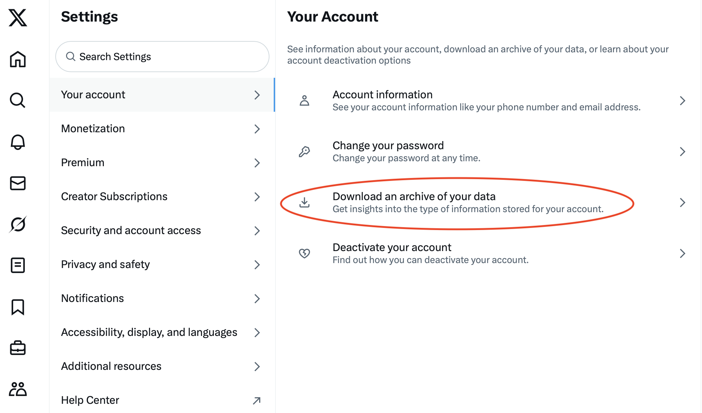
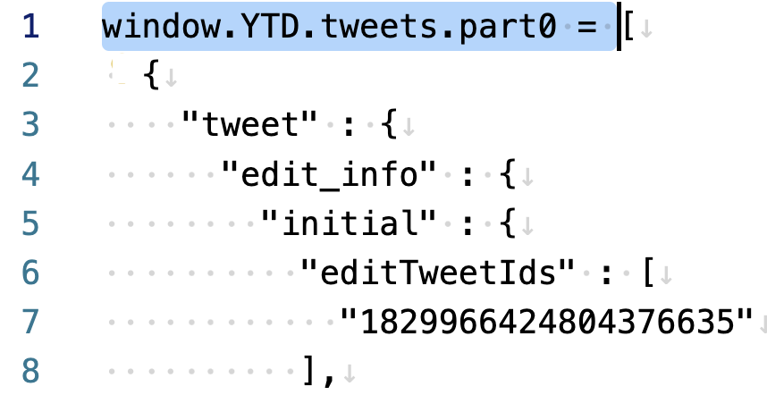

Notes on how to import your tweets into R and create a webpage listing all your threads
Author
Ed Hagen
Published
May 18, 2025
If you’ve put a lot of effort into your twitter threads over the years, it would be nice to have a webpage that links to each one. Here are my notes on how to do it using R and rmarkdown or Quarto. These notes will get you started but they’re not a complete recipe – you will have to fill in some details on your own.
First, request an archive of your data from your account settings page on twitter (now X):

Twitter might take a couple of days to generate this for you. The archive comes with a nifty web interface (which you won’t be using here).
Second, your tweets are in the tweets.js file inside the data directory inside the archive directory (twitter-2025-xx-yy-zzzzz/data/tweets.js). Open this large json file in your favorite text editor, delete the part I highlighted in blue here, and save this in a new file (e.g., tweets-copy.js):

Third, import this json file into R:
library(tidyverse)library(jsonlite)# Set these to your valuesscreen_name <-"ed_hagen"archive_path <-"~/Documents/Misc/twitterstuff/twitterarchive/twitter-2024-09-01-b826014a3be886e00b25dd88cf610708cc6b326d0209ebe75a377564d8fe740a/data/tweets-copy.js"d0 <-fromJSON(archive_path)tweets <-# tweet data frame: each row is one tweet d0$tweet |># convert twitter dates to R dates to sort on datemutate(created_at2 =parse_date_time(created_at, orders ="%a %b %d %H:%M:%S %z %Y")) |>arrange(created_at2)# This is a complex data frame# Some columns are lists, or lists of data framesglimpse(tweets)
Fourth, many of my 5543 tweets are replies to other users, whereas the tweets I want for this project are my top level tweets along with my replies to my top level tweets (i.e., my threads). Top level tweets are identified by an NA in the in_reply_to_status_id column of the tweets data frame:
# Create a list where each element is a single-row# data frame for each top-level tweet. In the next chunk# we will append the associated reply tweets to these# data frames as additional rows, i.e., each data frame # will be one thread.posts <- tweets[top_level,] |>split(tweets$id[top_level])# Get the replies to self (substitute your screen name)replies <- tweets |> dplyr::filter(in_reply_to_screen_name == screen_name)
Fifth, we need to link your replies to yourself to the proper top-level tweets, and in the proper order. This is how I did it:
# Add rows to each data frame, where each row# is one tweet in the thread, in chronological order.# The first row is your original post, and the remaining# rows are your repliesfor (i in1:length(posts)){while (T){ id <-last(posts[[i]]$id) rs <-which(replies$in_reply_to_status_id == id)if (length(rs) ==0) break posts[[i]] <-bind_rows(posts[[i]], replies[rs,]) }}
At this point you could do a number of things, such as rendering each thread yourself. The full text of each tweet is in the full_text column. Each tweet also has an entities data frame with hash tags, media urls (which are also in your archive), and mentions. Retweets are identified with an “RT” at the beginning of the full text.
Here I’m instead going to filter on threads, which I’ll define as tweets with one or more replies by me:
# Number of tweets in each threadnum_tweets <-map_int(posts, nrow)# Number of threads, i.e., two or more tweetssum(num_tweets>1)
[1] 101
threads <- posts[num_tweets>1]
The easiest way to render your threads is to embed them in webpage using the following html that includes your screen name and top-level tweet id:
# Get the ids of the first tweet in each threadids <-map_chr(threads, \(x) x$id[1])html <-'<blockquote class="twitter-tweet"> <a href="https://twitter.com/{screen_name}/status/{ids}"></a></blockquote> '# Create a vector of html blockquotes# that reference each top level tweetout <-str_glue(html)out[1:2]
# You will need to append this at# the end of all the blockquote tagstwitter_script <-'<script async src="https://platform.twitter.com/widgets.js" charset="utf-8"></script>'
At this point, you could write out to a file:
# This isn't a complete html filewrite_lines(c(out, twitter_script), file ="myhtmlfragment.html")
To instead render it within an rmarkdown or quarto file, set chunk options output: asis and echo: false:
```{r}#| output: asis#| echo: false# Render the threads, plus the# necessary script from twitteroutcat(twitter_script)```